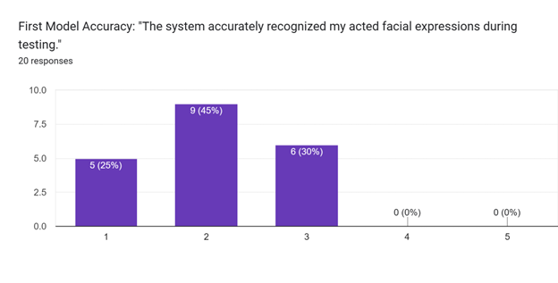
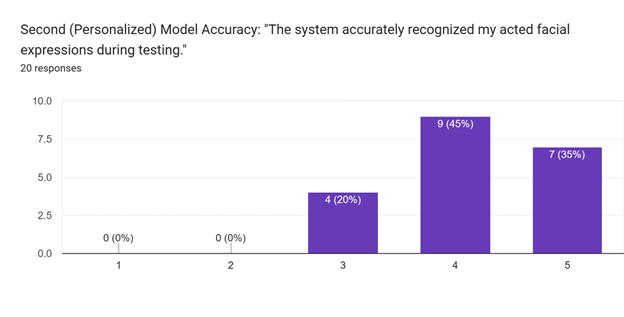

About
• Developed a real-time facial expression recognition system using computer vision and deep learning techniques.
• Utilized JSON preprocessing and PyTorch and Torchvision model training for Fer-2013 dataset training.
• For live fine-tuning of the second model, we engineered PyQt5 and OpenCV live camera-based inference to capture volunteers training.
• Clearly displayed the final research results through Matplotlib and Google Survey graphs.
Project Info
- Role: Software Developer
- Team Size: 3
- Time Frame: February 2025 - May 2025
- Course-Based Software Project: CMPT 419 - Special Topics in Artificial Intelligence, SFU
- IDE: Pycharm
- Language: Python
Main Research Question
• How effectively can fine-tuning a pre-trained, general-purpose facial expression recognition model with a specific user's expressions improve the accuracy and reliability of expression classification?
Results
• When comparing the baseline FER2013 pre-trained model against a model additionally trained on project-specific facial feature data, the custom-trained model demonstrated higher accuracy and stability in real-time facial expression recognition.
 